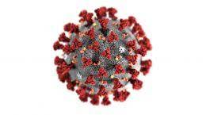
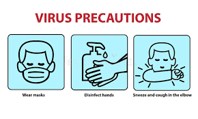
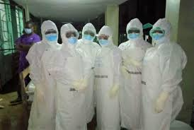

3D Diagram showing what the coronavirus looks like
The coronavirus disease 2019 (COVID-19) is a communicable
respiratory disease caused by a new strain of coronavirus that
causes illness in humans. Scientists are still learning about the
disease, and think that the virus began in animals. At some point,
one or more humans acquired infection from an animal, and those
infected humans began transmitting infection to other humans. The
disease spreads from person to person through infected air droplets
that are projected during sneezing or coughing. It can also be
transmitted when humans have contact with hands or surfaces that
contain the virus and touch their eyes, nose, or mouth with the
contaminated hands. COVID-19 was first reported in China, but it has
now spread throughout the world.
Read More
Effects Of COVID-19
Empty streets in the UK after lockdown due to COVID-19
Countries around the world are implementing measures to slow the
spread of the coronavirus, from national quarantines to school
closures. While "lockdown" isn't a technical term used by
public-health officials, it can refer to anything from mandatory
geographic quarantines to non-mandatory recommendations to stay at
home, closures of certain types of businesses, or bans on events and
gatherings, Lindsay Wiley, a health law professor at the Washington
College of Law, told Vox. Here are the countries and territories
that have implemented mandatory mass quarantines so far — and how
some of them are beginning to open up.
Read More
How to prevent COVID-19

Some of the Standard Operating Procedures(SOPs) to combat COVID-19
When the COVID-19 pandemic first struck, infectious disease experts
took up the same refrain they do every flu season about preventing
the spread of a viral infection — wash your hands, don’t touch your
face, keep your distance, and cover your mouth and nose when you
sneeze or cough. While these are excellent recommendations at all
times, we’ve gained a new understanding of their importance during
this health care crisis. To minimize your exposure to harmful viral
agents in this way, your best line of defense is handwashing.
Washing your hands every time you touch something may be
impractical, so here are the CDC recommendations for when to wash
your hands...
Read More
Personal Protective Equipment(PPE) Donations

Medical workers wearing the ppe materials.
In countries around the globe, PATH is partnering with governments
to support the COVID-19 response. These efforts take different forms
depending on local needs, local PATH expertise, and the support of
our donors. In Ghana, Kenya, and Uganda, we received urgent requests
to partner with the national ministries of health to secure personal
protective equipment (PPE) for frontline health workers—masks,
gloves, goggles, aprons, soap, and other supplies. Working with our
longtime donor The Conrad N. Hilton Foundation, we were able to fund
the rapid local procurement and global delivery of PPE to ministry
officials.
Read More